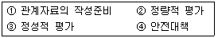
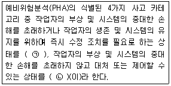
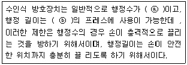
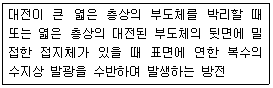
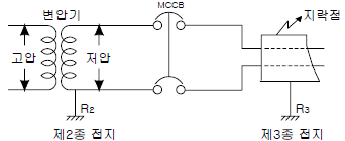
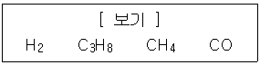
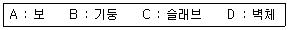
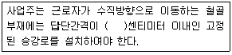

산업안전기사 (2014-05-25 기출문제)
1과목: 안전관리론
1. 관리그리드 이론에서 인간관계 유지에는 낮은 관심을 보이지만 과업에 대해서는 높은 관심을 가지는 리더십의 유형에 해당하는 것은?
- (1,1)형
- (1,9)형
- (9,1)형
- (9,9)형
(정답률: 77%)

2. 안전교육의 형태 중 OJT(On the Job Training) 교육과 관련이 가장 먼 것은?
- 다수의 근로자에게 조직적 훈련이 가능하다.
- 직장의 실정에 맞게 실제적인 훈련이 가능하다.
- 훈련에 필요한 업무의 지속성이 유지된다.
- 직장의 직속상사에 의한 교육이 가능하다.
(정답률: 86%)
3. 레윈(Lewin)은 인간의 행동 특성을 " B = f( PㆍE) " 으로 표현 하였다. 변수 "E"가 의미하는 것으로 옳은 것은?
- 연령
- 성격
- 작업환경
- 지능
(정답률: 91%)
4. 다음 중 브레인스토밍(Brainstorming)기법에 관한 설명으로 옳은 것은?
- 지정된 표현방식을 벗어나 자유롭게 의견을 제시한다.
- 주제와 내용이 다르거나 잘못된 의견은 지적하여 조정 한다.
- 참여자에게는 동일한 회수의 의견제시 기회가 부여 된다.
- 타인의 의견을 수정하거나 동의하여 다시 제시하지 않는다.
(정답률: 87%)
5. 산업안전보건법령상 산업안전보건위원회의 구성원 중 사용자 위원에 해당되지 않는 것은? (단, 해당 위원이 사업장에 선임이 되어 있는 경우에 한한다.)
- 안전관리자
- 보건관리자
- 산업보건의
- 명예산업안전감독관
(정답률: 89%)
6. 다음 중 산업안전보건법상 안전검사 대상 유해ㆍ위험 기계의 종류가 아닌 것은?
- 곤돌라
- 압력용기
- 리프트
- 아크용접기
(정답률: 68%)
7. 다음 중 의무안전인증대상 안전모의 성능기준 항목이 아닌 것은?
- 내열성
- 턱끈풀림
- 내관통성
- 충격흡수성
(정답률: 80%)
8. 적응기제(適應機制, Adjustment Mechanism)의 종류 중 도피적 기제(행동)에 속하지 않는 것은?
- 고립
- 퇴행
- 억압
- 합리화
(정답률: 81%)
9. 다음 중 안전보건교육의 단계별 종류에 해당하지 않는 것은?
- 지식교육
- 기초교육
- 태도교육
- 기능교육
(정답률: 81%)
10. 도수율이 24.5이고, 강도율이 2.15의 사업장이 있다. 이 사업장에서 한 근로자가 입사하여 퇴직할 때까지 몇 일 간의 근로손실일수가 발생하겠는가?
- 2.45일
- 215일
- 245일
- 2150일
(정답률: 71%)
11. 경보기가 울려도 기차가 오기까지 아직 시간이 있다고 판단하여 건널목을 건너다가 사고를 당했다. 다음 중 이 재해자의 행동성향으로 옳은 것은?
- 착오.착각
- 무의식행동
- 억측판단
- 지름길반응
(정답률: 72%)
12. 아담스(Edward Adams)의 사고연쇄 반응이론 중 관리자 의사결정을 잘못하거나 감독자가 관리적 잘못을 하였을 때의 단계에 해당되는 것은?
- 사고
- 작전적 에러
- 관리구조
- 전술적 에러
(정답률: 69%)
13. 다음 중 산업재해의 원인으로 간접적 원인에 해당되지 않는 것은?
- 기술적 원인
- 물적 원인
- 관리적 원인
- 교육적 원인
(정답률: 83%)
14. 산업안전보건법령상 안전.보건표지에 있어 경고표지의 종류 중 기본모형이 다른 것은?
- 매달린물체경고
- 폭발성물질경고
- 고압전기경고
- 방사성물질경고
(정답률: 68%)
15. 다음 중 정기점검에 관한 설명으로 가장 적합한 것은?
- 안전강조 기간, 방화점검 기간에 실시하는 점검
- 사고 발생 이후 곧바로 외부 전문가에 의하여 실시하는 점검
- 작업자에 의해 매일 작업 전, 중, 후에 해당 작업설비에 대하여 수시로 실시하는 점검
- 기계, 기구, 시설 등에 대하여 주, 월, 또는 분기 등 지정된 날짜에 실시하는 점검
(정답률: 88%)
16. 산업안전보건법령상 사업내 안전.보건교육의 교육시간에 관한 설명으로 옳은 것은?
- 사무직에 종사하는 근로자의 정기교육은 매분기 3시간 이상이다.
- 관리감독자의 지위에 있는 사람의 정기교육은 연간 8시간 이상이다.
- 일용근로자의 작업내용 변경시의 교육은 2시간 이상이다.
- 일용근로자를 제외한 근로자의 채용 시의 교육은 4시간 이상이다.
(정답률: 53%)
17. 안전교육 중 프로그램 학습법의 장점으로 볼 수 없는 것은?
- 학습자의 학습 과정을 쉽게 알 수 있다.
- 지능, 학습속도 등 개인차를 충분히 고려할 수 있다.
- 매 반응마다 피드백이 주어지기 때문에 학습자가 흥미를 가질 수 있다.
- 여러 가지 수업 매체를 동시에 다양하게 활용할 수 있다.
(정답률: 72%)
18. 동기부여이론 중 데이비스(K.Davis)의 이론은 동기유발을 식으로 표현하였다. 옳은 것은?
- 지식(knowledge) × 기능(skill)
- 능력(ability) × 태도(attitude)
- 상황(situation) × 태도(attitude)
- 능력(attitude) × 동기유발(motivation)
(정답률: 75%)
19. 다음 중 산업재해 통계에 있어서 고려해야 할 사항으로 틀린 것은?(오류 신고가 접수된 문제입니다. 반드시 정답과 해설을 확인하시기 바랍니다.)
- 산업재해 통계는 안전 활동을 추진하기 위한 정밀자료이며 중요한 안전 활동 수단이다.
- 산업재해 통계를 기반으로 안전조직이나, 상태를 추측해서는 안 된다.
- 산업재해 통계 그 자체보다는 재해 통계에 나타난 경향과 성질의 활동을 중요시해야 한다.
- 이용 및 활용가치가 없는 산업재해 통계는 그 작성에 따른 시간과 경비의 낭비임을 인지하여야 한다.
(정답률: 41%)
20. 다음 중 무재해운동의 기본이념 3원칙에 해당되는 않는 것은?
- 모든 재해에는 손실이 발생함으로 사업주는 근로자의 안전을 보장하여야 한다는 것을 전제로 한다.
- 위험을 발견, 제거하기 위하여 전원이 참가, 협력하여 각자의 위치에서 의욕적으로 문제해결을 실천하는 것을 뜻한다.
- 직장 내의 모든 잠재위험요인을 적극적으로 사전에 발견, 파악, 해결함으로써 뿌리에서부터 산업재해를 제거 하는 것을 말한다.
- 무재해, 무질병의 직장을 실현하기 위하여 직장의 위험요인을 행동하기 전에 예지하여 발견, 파악, 해결함으로써 재해발생을 예방하거나 방지하는 것을 말한다.
(정답률: 70%)
2과목: 인간공학 및 시스템안전공학
21. 다음 중 동작의 효율을 높이기 위한 동작경제의 원칙으로 볼 수 없는 것은?
- 신체 사용에 관한 원칙
- 작업장의 배치에 관한 원칙
- 복수 작업자의 활용에 관한 원칙
- 공구 및 설비 디자인에 관한 원칙
(정답률: 61%)
22. 다음 중 간헐적인 페달을 조작할 때 다리에 걸리는 부하를 평가하기에 가장 적당한 측정 변수는?
- 근전도
- 산소소비량
- 심장박동수
- 에너지소비량
(정답률: 79%)
23. 조사연구자가 특정한 연구를 수행하기 위해서는 어떤 상황에서 실시할 것인가를 선택하여야 한다. 즉, 실험실 환경에서도 가능하고, 실제 현장 연구도 가능한데 다음 중 현장 연구를 수행했을 경우 장점으로 가장 적절한 것은?
- 비용 절감
- 정확한 자료수집 가능
- 일반화가 가능
- 실험조건의 조절 용이
(정답률: 49%)
24. FT 작성에 사용되는 사상 중 시스템의 정상적인 가동상태에서 일어날 것이 기대되는 사상은?
- 통상사상
- 기본사상
- 생략사상
- 결함사상
(정답률: 54%)
25. 다음 중 시스템 안전 프로그램의 개발단계에서 이루어져야 할 사항의 내용과 가장 거리가 먼 것은?
- 교육훈련을 시작한다.
- 위험분석으로 주로 FMEA가 적용된다.
- 설계의 수용가능성을 위해 보다 완벽한 검토를 한다.
- 이 단계의 모형분석과 검사결과는 OHA의 입력자료로 사용된다.
(정답률: 56%)
26. 다음 중 정보를 전송하기 위해 청각적 표시장치보다 시각적 표시장치를 사용하는 것이 더 효과적인 경우는?
- 정보의 내용이 간단한 경우
- 정보가 후에 재참조되는 경우
- 정보가 즉각적인 행동을 요구하는 경우
- 정보의 내용이 시간적인 사건을 다루는 경우
(정답률: 78%)
27. 다음 중 소음 발생에 있어 음원에 대한 대책으로 볼 수없는 것은?
- 설비의 격리
- 적절한 재배치
- 저소음 설비 사용
- 귀마개 및 귀덮개 사용
(정답률: 82%)
28. 다음 중 일반적으로 대부분의 임무에서 시각적 암호의 효능에 대한 결과에서 가장 성능이 우수한 암호는?
- 구성 암호
- 영자와 형상 암호
- 숫자 및 색 암호
- 영자 및 구성 암호
(정답률: 77%)
29. 다음 중 불(Bool) 대수의 정리를 나타낸 관계식으로 틀린 것은?
- Aㆍ0=0
- A+1=1
- AㆍA' = 1
- A(A+B)=A
(정답률: 57%)
30. 다음 중 인간 오류에 관한 설계기법에 있어 전적으로 오류를 범하지 않게는 할 수 없으므로 오류를 범하기 어렵도록 사물을 설계하는 방법은?
- 배타설계(exclusive design)
- 예방설계(prevent design)
- 최소설계(minimum design)
- 감소설계(reduction design)
(정답률: 71%)
31. 다음 중 어느 부품 1000개를 100000시간 동안 가동 중에 5개의 불량품이 발생하였을 때의 평균작동시간(MTTF)은 얼마인가?
- 1 × 106시간
- 2 × 107시간
- 1 × 108시간
- 2 × 109시간
(정답률: 64%)
32. 다음 중 산업안전보건법에 따라 제조업의 유해ㆍ위험방지계획서를 작성하고자 할 때 관련 규정에 따라 1명 이상 포함시켜야 하는 사람의 자격으로 적합하지 않은 것은?
- 안전관리분야 기술사 자격을 취득한 사람
- 기계안전.전기안전.화공안전분야의 산업안전지도사 자격을 취득한 사람
- 기사 자격을 취득한 사람으로서 해당 분야에서 5년 근무한 경력이 있는 사람
- 한국산업안전보건공단이 실시하는 관련 교육을 8시간 이수한 사람
(정답률: 81%)
33. 다음 중 Weber의 법칙에 관한 설명으로 틀린 것은?
- Weber비는 분별의 질을 나타낸다.
- Weber비가 작을수록 분별력은 낮아진다.
- 변화감지역(JND)이 작을수록 그 자극차원의 변화를 쉽게 검출할 수 있다.
- 변화감지역(JND)은 사람이 50%를 검출할 수 있는 자극차원의 최소변화이다.
(정답률: 56%)
34. [보기]는 화학설비의 안전성 평가 단계를 간략히 나열한 것이다. 다음 중 평가 단계 순서를 올바르게 나타낸 것은?

- ① → ③ → ② → ④
- ① → ② → ④ → ③
- ① → ③ → ④ → ②
- ① → ② → ③ → ④
(정답률: 76%)
35. 다음 중 결함수분석법(FTA)에서의 미니멀 컷셋과 미니멀 패스셋에 관한 설명으로 옳은 것은?
- 미니멀 컷셋은 정상사상(top event)을 일으키기 위한 최소한의 컷셋이다.
- 미니멀 컷셋은 시스템의 신뢰성을 표시하는 것이다.
- 미니멀 패스셋은 시스템의 위험성을 표시하는 것이다.
- 미니멀 패스셋은 시스템의 고장을 발생시키는 최소의 패스셋이다.
(정답률: 74%)
36. 다음 중 시성능기준함수(VLB)의 일반적인 수준 설정으로 틀린 것은?
- 현실상황에 적합한 조명수준이다.
- 표적 탐지 활동은 50%에서 99%이다.
- 표적(target)은 정적인 과녁에서 동적인 과녁으로 한다.
- 언제, 시계 내의 어디에 과녁이 나타날지 아는 경우 이다.
(정답률: 53%)
37. 다음 중 인간-기계 시스템을 3가지로 분류한 설명으로 틀린 것은?
- 자동 시스템에서는 인간요소를 고려하여야 한다.
- 자동 시스템에서 인간은 감시, 정비유지, 프로그램 등의 작업을 담당한다.
- 수동 시스템에서 기계는 동력원을 제공하고 인간의 통제하에서 제품을 생산한다.
- 기계 시스템에서는 동력기계화 체계와 고도로 통합된 부품으로 구성된다.
(정답률: 69%)
38. 다음 중 각 기본사상의 발생확률이 증감하는 경우 정상 사상의 발생확률에 어느 정도 영향을 미치는가를 반영하는 지표로서 수리적으로는 편미분계수와 같은 의미를 갖는 FTA의 중요도 지수는?
- 구조 중요도
- 확률 중요도
- 치명 중요도
- 비구조 중요도
(정답률: 66%)
39. 중이소골(ossicle)이 고막의 진동을 내이의 난원창(oval window)에 전달하는 과정에서 음파의 압력은 어느 정도 증폭되는가?
- 2배
- 12배
- 22배
- 220배
(정답률: 49%)
40. 다음 설명 중 ㄱ 과 ㄴ 에 해당하는 내용이 올바르게 연결된 것은?

- ㄱ-파국적, ㄴ-중대
- ㄱ-중대, ㄴ-파국적
- ㄱ-한계적, ㄴ-중대
- ㄱ-중대, ㄴ-한계적
(정답률: 57%)
3과목: 기계위험방지기술
41. 리프트의 제작기준 등을 규정함에 있어 정격속도의 정의로 옳은 것은?
- 화물을 싣고 하강할 때의 속도
- 화물을 싣고 상승할 때의 최고속도
- 화물을 싣고 상승할 때의 평균속도
- 화물을 싣고 상승할 때와 하강할 때의 평균속도
(정답률: 50%)
42. 기계의 각 작동 부분 상호간을 전기적, 기구적, 유공압 장치 등으로 연결해서 기계의 각 작동 부분이 정상으로 작동하기 위한 조건이 만족 되지 않을 경우 자동적으로 그 기계를 작동할 수 없도록 하는 것을 무엇이라 하는가?
- 인터록기구
- 과부하방지장치
- 트립기구
- 오버런기구
(정답률: 77%)
43. 일반적으로 기계설비의 점검시기를 운전 상태와 정지 상태로 구분할 때 다음 중 운전 중의 점검사항이 아닌 것은?
- 클러치의 동작상태
- 베어링의 온도상승 여부
- 설비의 이상음과 진동상태
- 동력전달부의 볼트.너트의 풀림상태
(정답률: 70%)
44. 다음 중 드릴 작업의 안전수칙으로 가장 적합한 것은?
- 손을 보호하기 위하여 장갑을 착용한다.
- 작은 일감은 양 손으로 견고히 잡고 작업한다.
- 정확한 작업을 위하여 구멍에 손을 넣어 확인한다.
- 작업시작 전 척 렌치(chuck wrench)를 반드시 뺀다.
(정답률: 73%)
45. 질량 100kg의 화물이 와이어로프에 매달려 2m/s2의 가속도로 권상되고 있다. 이때 와이어로프에 작용하는 장력의 크기는 몇 N 인가? (단, 여기서 중력가속도는 10m/s2로 한다.)
- 200N
- 300N
- 1200N
- 2000N
(정답률: 60%)
46. 다음 중 산업안전보건법령상 보일러에 설치하여야 하는 방호장치에 해당하지 않는 것은?
- 절탄장치
- 압력제한스위치
- 압력방출장치
- 고저수위조절장치
(정답률: 80%)
47. 다음 중 정 작업시의 작업안전수칙으로 틀린 것은?
- 정 작업시에는 보안경을 착용하여야 한다.
- 정 작업으로 담금질된 재료를 가공해서는 안 된다.
- 정 작업을 시작할 때와 끝날 무렵에는 세게 친다.
- 철강재를 정으로 절단시에는 철편이 날아 튀는 것에 주의한다.
(정답률: 84%)
48. 다음 중 산업안전보건법령상 지게차의 헤드가드가 갖추어야 하는 사항으로 틀린 것은?(관련 규정 개정전 문제로 여기서는 기존 정답인 2번을 누르면 정답 처리됩니다. 자세한 내용은 해설을 참고하세요.)
- 강도는 기게차의 최대하중의 2배 값(4톤을 넘는 값에 대해서는 4톤으로 한다)의 등분포정하중(等分布靜河重) 에 견딜 수 있을 것
- 상부틀의 각 개구의 폭 또는 길이가 20cm 이상일 것
- 운전자가 앉아서 조작하는 방식의 지게차의 경우에는 운전자의 좌석 윗면에서 헤드가드의 상부틀 아랫면까지의 높이가 1m 이상일 것
- 운전자가 서서 조작하는 방식의 지게차의 경우에는 운전석의 바닥면에서 헤드가드의 상부틀 하면까지의 높이가 2m 이상일 것
(정답률: 79%)
49. 둥근톱의 톱날 직경이 500mm일 경우 분할날의 최소길 이는 약 얼마이어야 하는가?
- 262mm
- 314mm
- 333mm
- 410mm
(정답률: 45%)
50. 연삭숫돌의 기공 부분이 너무 작거나, 연질의 금속을 연마할 때에 숫돌표면의 공극이 연삭칩에 막혀서 연삭이 잘 행하여지지 않는 현상을 무엇이라 하는가?
- 자생현상
- 드레싱 현상
- 그레이징 현상
- 눈메꿈 현상
(정답률: 54%)
51. 다음 중 밀링작업에 있어서의 안전조치 사항으로 틀린 것은?
- 절삭유의 주유는 가공 부분에서 분리된 커터의 위에서 하도록 한다.
- 급속이송은 백래시 제거장치가 동작하지 않고 있음을 확인한 다음 행한다.
- 밀링 커터의 칩제거는 작고 날카로우므로 반드시 칩 브레이커로 한다.
- 상하좌우의 이송장치의 핸들은 사용 후 풀어 놓는다.
(정답률: 49%)
52. 산업안전보건법상 비파괴검사를 해서 결함 유무를 확인 하여야 하는 고속회전체의 기준으로 옳은 것은?
- 회전축의 중량이 100킬로그램을 초과하고 원주속도가 초당 120미터 이상인 고속회전체
- 회전축의 중량이 500킬로그램을 초과하는 원주속도가 초당 100미터 이상인 고속회전체
- 회전축의 중량이 1톤을 초과하고 원주속도가 초당 120 미터 이상인 고속회전체
- 회전축의 중량이 3톤을 초과하고 원주속도가 초당 100 미터 이상인 고속회전체
(정답률: 66%)
53. 다음은 프레스기에 사용되는 수인식 방호장치에 관한 ,에 들어갈 내용으로 가장 적합한 설명이다. ( ) 안에 ⓐ, ⓑ 에 들어갈 내용으로 알맞은 것은?

- ⓐ : 150SPM 이하, ⓑ : 30mm 이상
- ⓐ : 120SPM 이하, ⓑ : 40mm 이상
- ⓐ : 150SPM 이하, ⓑ : 30mm 미만
- ⓐ : 120SPM 이상, ⓑ : 40mm 미만
(정답률: 61%)
54. 다음 중 아세틸렌 용접시 역화가 일어날 때 가장 먼저 취해야 할 행동으로 가장 적절한 것은?
- 산소밸브를 즉시 잠그고, 아세틸렌 밸브를 잠근다.
- 아세틸렌 밸브를 즉시 잠그고, 산소밸브를 잠근다.
- 산소밸브는 열고, 아세틸렌 밸브는 즉시 닫아야 한다.
- 아세틸렌의 사용압력을 1kgf/cm2 이하로 즉시 낮춘다.
(정답률: 67%)
55. 다음 중 롤러기에 사용되는 급정지장치의 급정지거리 기준으로 옳은 것은?
- 앞면 롤러의 표면속도가 30m/min 미만이면 급정지 거리는 앞면 롤러 직경의 1/3 이내이어야 한다 .
- 앞면 롤러의 표면속도가 30m/min 이상이면 급정지 거리는 앞면 롤러 직경의 1/3 이내이어야 한다 .
- 앞면 롤러의 표면속도가 30m/min 미만이면 급정지 거리는 앞면 롤러 원주의 1/3 이내이어야 한다.
- 앞면 롤러의 표면속도가 30m/min 이상이면 급정지 거리는 앞면 롤러 원주의 1/3 이내이어야 한다.
(정답률: 58%)
56. 다음 중 설비의 일반적인 고장형태에 있어 마모고장과 가장 거리가먼것은?
- 부품, 부재의 마모
- 열화에 생기는 고장
- 부품, 부재의 피복피로
- 순간적 외력에 의한 파손
(정답률: 79%)
57. 다음 중 프레스기계의 위험을 방지하기 위한 본질적 안전(no-hand in die 방식) 가 아닌 것은 ?
- 안전금형의 사용
- 수인식 방호장치 사용
- 전용프레스 사용
- 금형에 안전 울 설치
(정답률: 60%)
58. 다음 중 수평거리 20m, 높이가 5m 인 경우 지게차의 안정도는 얼인가?
- 10%
- 20%
- 25%
- 40%
(정답률: 61%)
59. 다음 중 선반의 방호장치로 적당하지 않은 것은?
- 실드(shield)
- 슬라이딩(sliding)
- 척커버(chuck cover)
- 칩 브레이커(chip breaker)
(정답률: 65%)
60. 산업용 로봇은 크게 입력정보교시에 의한 분류와 동작 형태에 의한 분류로 나눌 수 있다 . 다음 중 입력정보교시에 의한 분류에 해당되는 것은?
- 관절 로봇
- 극좌표 로봇
- 원통좌표 로봇
- 수치제어 로봇
(정답률: 61%)
4과목: 전기위험방지기술
61. 감전사고로 인한 호흡 정지 시 구강대 구강법에 의한 인공호흡의 매분 회수와 시간은 어느 정도 하는 것이 바람 직한가?
- 매분 5~10회, 30분 이하
- 매분 12~15회, 30분 이상
- 매분 20~30회, 30분 이하
- 매분 30회이상 , 20분~30분정도
(정답률: 70%)
62. 다음 어떤 방전에 대한 설명인가?

- 코로나 방전
- 뇌상 방전
- 연면방전
- 불꽃방전
(정답률: 71%)
63. 다음은 인체 내에 흐르는 60Hz 전류의 크기에 따른 영향을 기술한 것이다 . 틀린 것은? (단, 통전경로는 손 → 발, 성인(남)의 기준이다.)
- 20~30mA는 고통을 느끼고 강한 근육의 수축이 일어나 호흡이 곤란하다.
- 50~100mA는 순간으로 확실하게 사망한다.
- 1~8mA는 쇼크를 느끼나 인체의 기능에는 영향이 없다.
- 15~20mA 쇼크를 느끼고 감전부위 가까운 쪽의 근육이 마비된다.
(정답률: 58%)
64. 감전사고가 발생 했을 때 피해자를 구출는 방법으로 옳지 않은 것은?
- 피해자가 계속하여 전기설비에 접촉되어 있다면 우선 그 설비의 전원을 신속히 차단한다.
- 순간적으로 감전 상황을 판단하고 피해자의 몸과 충전 부가 접촉되어 있는지를 확인한다.
- 충전부에 감전되어 있으면 몸이나 손을 잡고 피해자를 곧바로 이탈시켜야 한다.
- 절연 고무장갑, 고무장화 등을 착용한 후에 구원해 준다.
(정답률: 82%)
65. 그림과 같이 변압기 2차에 200V의 전원이 공급되고 있을 때 지락점에서 지락사고가 발생하였다면 회로에 흐르는 전류는 몇 A인가? (단 , R2=10Ω, R3=30Ω 이다.)

- 5A
- 10A
- 15A
- 20A
(정답률: 41%)
66. 정전기 재해방지 대책에서 접지방법에 해당되지 않는 것은?
- 접지단자와 접지용 도체와의 접속에 이용되는 접지 기구는 견고하고 확실하게 접속시켜주는 것이 좋다.
- 접지단자는 접지용 도체, 접지기구와 확실하게 접촉될 수 있도록 금속면이 노출되어 있거나, 금속면에 나사, 너트 등을 이용하여 연결할 수 있어야 한다.
- 접지용 도체의 설치는 정전기가 발생하는 작업 전이나 발생 할 우려가 없게 된 후 정치시간이 경과한 후에 행하여야 한다.
- 본딩은 금속도체 상호간에 전기적 접속이므로 접지용 도체, 접지단자에 의하여 표준 환경조건에서 저항은 1MΩ 미만이 되도록 경고하고 확실하게 실시하여야한다.
(정답률: 46%)
67. 전선로를 개로한 후에도 잔류 전하에 의한 감전재해를 방지하기 위하여 방전을 요하는 것은?
- 나선의 가공 송배선 선로
- 전열회로
- 전동기에 연결된 전선로
- 개로한 전선로가 전력 케이블로 된 것
(정답률: 54%)
68. 인체저항에 대한 설명으로 옳지 않은 것은?
- 인체저항은 인가전압의 함수이다.
- 인가시간이 길어지면 온도상승으로 인체저항은 증가한다.
- 인체저항은 접촉면적에 따라 변한다.
- 1000V 부근에서 피부의 절연파괴가 발생할 수 있다.
(정답률: 65%)
69. 전동기용 퓨즈의 사용 목적으로 알맞은 것은?
- 과전압 차단
- 지락과전류 차단
- 누설전류 차단
- 회로에 흐르는 과전류 차단
(정답률: 66%)
70. 정전기 화재폭발 원인인 인체대전에 대한 예방대책으로 옳지 않은 것은?
- 대전물체를 금속판 등으로 차폐한다.
- 대전방지제를 넣은 제전복을 착용한다.
- 대전방지 성능이 있는 안전화를 착용한다.
- 바닥 재료는 고유저항이 큰 물질로 사용한다.
(정답률: 53%)
71. 교류 3상 전압 380V, 부하 50kVA인 경우 배선에서의 누전전류의 한계는 약 mA 인가? (단, 전기설비기술기준에서의 누설전류 허용값을 적용한다.)
- 10mA
- 38mA
- 54mA
- 76mA
(정답률: 40%)
72. 정전기 발생에 영향을 주는 요인이 아닌 것은?
- 물체의 분리속도
- 물체의 특성
- 물체의 접촉시간
- 물체의 표면상태
(정답률: 63%)
73. 대지를 접지로 이용하는 이유는?
- 대지는 넓어서 무수한 전류통로가 있기 때문에 저항이 작다.
- 대지는 철분을 많이 포함하고 있기 때문에 저항이 작다.
- 대지는 토양의 주성분이 산화알루미늄(Al2O3)이므로 저항이 작다.
- 대지는 토양의 주성분이 규소(SiO2)이므로 저항이 영(Zero)에 가깝다.
(정답률: 67%)
74. 방폭전기기기의 발화도의 온도등급과 최고 표면온도에 의한 폭발성 가스의 분류표기를 가장 올바르게 나타낸 것은?
- T1 : 450℃ 이하
- T2 : 350℃ 이하
- T4 : 125℃ 이하
- T6 : 100℃ 이하
(정답률: 57%)
75. 어떤 공장에서 전기설비에 관한 절연상태를 측정한 결과가 다음과 같이 나왔다. 절연상태가 불량인 것은?(관련 규정 개정전 문제로 여기서는 기존 정답인 3번을 누르면 정답 처리됩니다. 자세한 내용은 해설을 참고하세요.)
- 사무실의 110V 전등회로의 절연저항 값이 0.14MΩ 이었다.
- 단상 유도전동기 전용 220V 분기개폐기의 절연저항 값이 0.25MΩ 이었다
- 정격이 440V, 300kW인 고주파 유도 가열기 전로의 절연저항 값이 0.3MΩ 이었다.
- 40W, 220V의 형광등 회로의 절연저항 값이 0.2MΩ 이었다.
(정답률: 64%)
76. 방폭구조에 관계있는 위험 특성이 아닌 것은?
- 발화 온도
- 증기 밀도
- 화염 일주한계
- 최소 점화전류
(정답률: 61%)
77. 허용접촉 전압과 종별이 서로 다른 것은?
- 제1종 : 2.5V 초과
- 제2종 : 25V 이하
- 제3종 : 50V 이하
- 제4종 : 제한없음
(정답률: 60%)
78. 두 물체의 마찰로 3000V의 정전기가 생겼다. 폭발성 위험의 장소에서 두 물체의 정전용량은 약 몇 pF 이면 폭발로 이어지겠는가? (단, 착화에너지는 0.25mJ 이다.)
- 14
- 28
- 45
- 56
(정답률: 41%)
79. 교류 아크 용접기용 자동전격 방지기의 시동감도는 높을수록 좋으나, 극한상황 하에서 전격을 방지하기 위해서 시동감도는 몇 Ω을 상한치로 하는 것이 바람직한가?
- 500Ω
- 1000Ω
- 1500Ω
- 2000Ω
(정답률: 42%)
80. 자동전격방장치에 대한 설명으로 올바른 것은?
- 아크 발생이 중단된 후 약 1초 이내에 출력측 무부하 전압을 자동적으로 10V 이하로 강화시킨다.
- 용접 시에 용접기 2차측의 부하전압을 무부하전압으로 변경시킨다.
- 용접봉을 모재에 접촉할 때 용접기 2차측은 폐회로가 되며. 이때 흐르는 전류를 감지한다.
- SCR 등의 개폐용 반도체 소자를 이용한 유접점방식이 많이 사용되고 있다.
(정답률: 39%)
5과목: 화학설비위험방지기술
81. 산업안전보건법에 의한 공정안전보고서에 포함되어야하는 내용 중 공정안전자료의 세부내용에 해당하지 않는 것은?
- 안전운전지침서
- 각종 건물.설비의 배치도
- 유해.위험설비의 목록 및 사양
- 위험설비의 안전설계.제작 및 설치관련 지침서
(정답률: 52%)
82. 가스를 화학적 특성에 따라 분류할 때 독성가스가 아닌 것은?
- 황화수소(H2S)
- 시안화수소(HCN)
- 이산화탄소(CO2)
- 산화에틸렌(C2H4O)
(정답률: 73%)
83. 다음 중 연소시 발생하는 열에너지를 흡수하는 매체를 화염 속에 투입하여 소화하는 방법은?
- 냉각소화
- 희석소화
- 질식소화
- 억제소화
(정답률: 63%)
84. 다음 중 석유화재의 거동에 관한 설명으로 틀린 것은?
- 액면상의 연소 확대에 있어서 액온이 인화점보다 높을 경우 예혼합형 전파연소를 나타낸다.
- 액면상의 연소 확대에 있어서 액온이 인화점보다 낮을 경우 예열형 전파연소를 나타낸다.
- 저장조 용기의 직경이 1m 이상에서 액면강하속도는 용기 직경에 관계없이 일정하다.
- 저장조 용기의 직경이 1m 이상이면 층류화염형태를 나타낸다.
(정답률: 32%)
85. 미국소방협회(NFPA)의 위험표시라벨에 황색 숫자는 어떠한 위험성을 나타내는가?
- 건강위험성
- 화재위험성
- 반응위험성
- 기타위험성
(정답률: 55%)
86. 가스누출감지경보기의 선정기준, 구조 및 설치 방법에 관한 설명으로 옳지 않은 것은?
- 암모니아를 제외한 가연성가스 누출감지경보기는 방폭 성능을 갖는 것이어야 한다.
- 독성가스 누출감지경보기는 해당 독성가스 허용농도의 25% 이하에서 경보가 울리도록 설정하여야 한다.
- 하나의 감지대상가스가 가연성이면서 독성인 경우에는 독성가스를 기준하여 가스누출감지경보기를 선정하여야 한다.
- 건축물 내에 설치되는 경우, 감지대상가스의 비중이 공기보다 무거운 경우에는 건축물 내의 하부에 설치하여야 한다.
(정답률: 60%)
87. 다음 중 자연 발화의 방지법에 관계가 없는 것은?
- 점화원을 제거한다.
- 저장소 등의 주위 온도를 낮게 한다.
- 습기가 많은 곳에는 저장하지 않는다.
- 통풍이나 저장법을 고려하여 열의 축적을 방지한다.
(정답률: 60%)
88. [보기]의 물질을 폭발 범위가 넓은 것부터 좁은 순서로 바르게 배열한 것은?

- CO>H2>C3H8>CH4
- H2>CO>CH4>C3H8
- C3H8>CO>CH4>H2
- CH4>H2>CO>C3H8
(정답률: 64%)
89. 탱크 내부에서 작업시 작업용구에 관한 설명으로 옳지 않은 것은?
- 유리라이닝을 한 탱크 내부에서는 줄사다리를 사용한다.
- 가연성 가스가 있는 경우 불꽃을 내기 어려운 금속을 사용한다.
- 용접 절단시에는 바람의 영향을 억제하기 위하여 환기 장치의 설치를 제한한다.
- 탱크 내부에 인화성 물질의 증기로 인한 폭발 위험이 우려되는 경우 방폭구조의 전기기계기구를 사용한다.
(정답률: 67%)
90. 분말 소화설비에 관한 설명으로 옳지 않은 것은?
- 기구가 간단하고 유지관리가 용이하다.
- 온도 변화에 대한 약제의 변질이나 성능의 저하가 없다.
- 분말은 흡습력이 작으며 금속의 부식을 일으키지 않는다.
- 다른 소화설비보다 소화능력이 우수하며 소화시간이 짧다.
(정답률: 58%)
91. 다음 중 인화점이 가장 낮은 물질은?
- CS2
- C2H5OH
- CH3COCH3
- CH3COOC2H5
(정답률: 62%)
92. 산업안전보건법에서 규정하고 있는 위험물 중 부식성 염기류로 분류되기 위하여 농도가 40% 이상이어야 하는 물질은?
- 염산
- 아세트산
- 불산
- 수산화칼륨
(정답률: 58%)
93. 8vol% 헥산, 3vol% 메탄, 1vol% 에틸렌으로 구성된 혼합가스의 연소하한값(LFL)은 약 몇 vol% 인가? (단, 각 물질의 공기 중 연소하한값은 헥산은 1.1vol%, 메탄은 5.0vol%, 에틸렌은 2.7vol% 이다.)
- 0.69
- 1.45
- 1.95
- 2.45
(정답률: 60%)
94. 어떤 습한 고체재료 10kg의 건조 후 무게를 측정하였더니 6.8kg이었다. 이 재료의 함수율은 몇 kg.H2O/kg 인가?
- 0.25
- 0.36
- 0.47
- 0.58
(정답률: 55%)
95. 반응성 화학물질의 위험성은 주로 실험에 의한 평가 보다 문헌조사 등을 통해 계산에 의한 평가하는 방법이 사용되고 있는데, 이에 관한 설명으로 옳지 않은 것은?
- 위험성이 너무 커서 물성을 측정할 수 없는 경우 계산에 의한 평가 방법을 사용할 수도 있다.
- 연소열, 분해열, 폭발열 등의 크기에 의해 그 물질의 폭발 또는 발화의 위험예측이 가능하다.
- 계산에 의한 평가를 하기 위해서는 폭발 또는 분해에 따른 생성물의 예측이 이루어져야 한다.
- 계산에 의한 위험성 예측은 모든 물질에 대해 정확성이 있으므로 더 이상의 실험을 필요로 하지 않는다.
(정답률: 78%)
96. 보기의 고압가스용 기기재료로 구리를 사용하여도 안전한 것은?
- O2
- C2H2
- NH3
- H2S
(정답률: 57%)
97. 산업안전보건법에서 정한 위험물질을 기준량 이상 제조, 취급, 사용 또는 저장하는 설비로서 내부의 이상상태를 조기에 파악하기 위하여 필요한 온도계ㆍ유량계ㆍ압력계 등의 계측장치를 설치하여야 하는 대상이 아닌 것은?
- 가열로 또는 가열기
- 증류ㆍ정류ㆍ증발ㆍ추출 등 분리를 하는 장치
- 반응폭주 등 이상화학반응에 의하여 위험물질이 발생 할 우려가 있는 설비
- 300℃ 이상의 온도 또는 게이지 압력이 7kg/cm2 이상의 상태에서 운전하는 설비
(정답률: 53%)
98. 폭굉현상은 혼합물질에만 한정되는 것이 아니고, 순수 물질에 있어서도 그 분해열이 폭굉을 일으키는 경우가 있다. 다음 중 고압 하에서 폭굉을 일으키는 순수물질은?
- 오존
- 아세톤
- 아세틸렌
- 아조메탄
(정답률: 53%)
99. 다음 중 스프링식 안전밸브를 대체할 수 있는 안전장치는?
- 캡(cap)
- 파열판(rupture disk)
- 게이트밸브(gate valve)
- 벤트스택(vent stack)
(정답률: 57%)
100. 공기 중 암모니아가 20ppm(노출기준 25ppm), 톨루엔이 20ppm(노출기준 50ppm)이 완전 혼합되어 존재하고 있다. 혼합물질의 노출기준을 보정하는데 활용하는 노출지수는 약 얼마인가? (단, 두 물질 간에 유해성이 인체의 서로 다른 부위에 작용한다는 증거는 없다.)
- 1.0
- 1.2
- 1.5
- 1.6
(정답률: 54%)
6과목: 건설안전기술
101. 위험방지를 위해 철골작업을 중지하여야 하는 기준으로 옳은 것은?
- 풍속이 초당 1m 이상인 경우
- 강우량이 시간당 1cm 이상인 경우
- 강설량이 시간당 1cm 이상인 경우
- 10분간 평균풍속이 초당 5m 이상인 경우
(정답률: 68%)
102. 말뚝을 절단할 때 내부응력에 가장 큰 영향을 받는 말뚝은?
- 나무말뚝
- PC말뚝
- 강말뚝
- RC말뚝
(정답률: 48%)
103. 압쇄기를 사용하여 건물해체 시 그 순서로 옳은 것은?

- A-B-C-D
- A-C-B-D
- C-A-D-B
- D-C-B-A
(정답률: 69%)
104. 콘크리트의 측압에 관한 설명으로 옳은 것은?
- 거푸집 수밀성이 크면 측압은 작다.
- 철근의 암이 적으면 측압은 작다.
- 부어넣기 속도가 빠르면 측압은 작아진다.
- 외기의 온도가 낮을수록 측압은 크다.
(정답률: 64%)
1⑤. 가설계단 및 계단참을 설치하는 때에는 매 m2당 몇 kg 이상의 하중에 견딜 수 있는 강도를 가진 구조로 설치하여야 하는가?
- 200kg
- 300kg
- 400kg
- 500kg
(정답률: 47%)
106. 지반조사의 간격 및 깊이에 대한 내용으로 옳지 않은 것은?
- 조사간격은 지층상태, 구조물 규모에 따라 정한다.
- 지층이 복잡한 경우에는 기 조사한 간격사이에 보완 조사를 실시한다.
- 절토, 개착, 터널구간은 기반암의 심도 5~6m까지 확인한다.
- 조사깊이는 액상화문제가 있는 경우에는 모래층하단에 있는 단단한 지지층까지 조사한다.
(정답률: 67%)
107. 비계의 높이가 2m 이상인 작업장소에 작업발판을 설치 할 때 그 폭은 최소 얼마 이상이어야 하는가?
- 30cm
- 40cm
- 50cm
- 60cm
(정답률: 69%)
108. 이동식 비계를 조립하여 작업을 하는 경우의 준수기준으로 옳지 않은 것은?
- 비계의 최상부에서 작업을 할 때에는 안전난간을 설치 하여야 한다.
- 작업발판의 최대적재하중은 400kg을 초과하지 않도록 한다.
- 승강용 사다리는 견고하게 설치하여야 한다.
- 작업발판은 항상 수평을 유지하고 작업발판 위에서 안전난간을 딛고 작업을 하거나 받침대 또는 사다리를 사용하여 작업하지 않도록 한다.
(정답률: 71%)
109. 작업발판 일체형 거푸집에 해당되지 않는 것은?
- 갱폼(Gang Form)
- 슬립폼(Slip Form)
- 유로폼(Euro Form)
- 클라이밍폼(Climbing form)
(정답률: 56%)
110. 흙막이 벽을 설치하여 기초 굴착작업 중 굴착부 바닥이 솟아올랐다. 이에 대한 대책으로 옳지 않은 것은?
- 굴착주변의 상재하중을 증가시킨다.
- 흙막이 벽의 근입깊이를 깊게 한다.
- 토류벽의 배면토압을 경감시킨다.
- 지하수 유입을 막는다.
(정답률: 54%)
111. 토석 붕괴의 위험이 있는 사면에서 작업할 경우의 행동으로 옳지 않은 것은?
- 동시작업의 금지
- 대피공간의 확보
- 2차재해의 방지
- 급격한 경사면 계획
(정답률: 75%)
112. 작업장 출입구 설치 시 준수해야 할 사항으로 옳지 않은 것은?
- 주된 목적이 하역운반계용인 출입구에는 보행자용 출입구를 따로 설치하지 않을 것
- 출입구의 위치.수 및 크기가 작업장의 용도와 특성에 맞도록 할 것
- 출입구에 문을 설치하는 경우에는 근로자가 쉽게 열고 닫을 수 있도록 할 것
- 계단이 출입구와 바로 연결된 경우에는 작업자의 안전한 통행을 위하여 그 사이에 1.2m 이상 거리를 두거나 안내표지 또는 비상벨 등을 설치할 것
(정답률: 69%)
113. 흙의 투수계수에 영향을 주는 인자에 대한 내용으로 옳지 않은 것은?
- 공극비 : 공극비가 클수록 투수계수는 작다.
- 포화도 : 포화도가 클수록 투수계수는 크다.
- 유체의 점성계수 : 점성계수가 클수록 투수계수는 작다.
- 유체의 밀도 : 유체의 밀도가 클수록 투수계수는 크다.
(정답률: 58%)
114. 철근인력운반에 대한 설명으로 옳지 않은 것은?
- 운반할 때에는 중앙부를 묶어 운반한다.
- 긴 철근은 두 사람이 한 조가 되어 어깨메기로 운반하는 것이 좋다.
- 운반 시 1인당 무게는 25kg 정도가 적당하다.
- 긴 철근을 한사람이 운반할 때는 한쪽을 어깨에 메고 한쪽 끝을 땅에 끌면서 운반한다.
(정답률: 58%)
115. 철골작업에서의 승강로 설치기준 중 ( )안에 알맞은 숫자는?

- 20
- 30
- 40
- 50
(정답률: 58%)
116. 산업안전보건기준에 관한 규칙에 따른 거푸집동바리를 조립하는 경우의 준수사항으로 옳지 않은 것은?
- 개구부 상부에 동바리를 설치하는 경우에는 상부하중을 견딜 수 있는 견고한 받침대를 설치할 것
- 동바리의 이음은 맞댄이음이나 장부이음으로 하고 같은 품질의 재료를 사용할 것
- 강재와 강재의 접속부 및 교차부는 철선을 사용하여 단단히 연결할 것
- 거푸집의 곡면인 경우에는 버팀대의 부착 등 그 거푸집의 부상(浮上)을 방지하기 위한 조치를 할 것
(정답률: 65%)
117. 달비계 설치 시 와이어로프를 사용할 때 사용가능한 와이어로프의 조건은?
- 지름의 감소가 공칭지름의 8%인 것
- 이음매가 없는 것
- 심하게 변형되거나 부식된 것
- 와이어로프의 한 꼬임에서 끊어진 소선의 수가 10% 인것
(정답률: 66%)
118. 장비 자체보다 높은 장소의 땅을 굴착하는데 적합한 장비는?
- 파워쇼벨(power shovel)
- 불도저(Bulldozer)
- 드래그라인(dragline)
- 크램쉘(Clam Shell)
(정답률: 73%)
119. 앵글로저보다 큰 각으로 움직일 수 있어 흙을 깍아 옆으로 밀어내면서 전진하므로 제설, 제토작업 및 다량의 흙을 전방으로 밀어 가는데 적합한 불도저는?
- 스트레이트 도저
- 틸트 도저
- 레이크 도저
- 힌지 도저
(정답률: 42%)
120. 흙의 특성으로 옳지 않은 것은?
- 흙은 선형재료이며 응력-변형률 관계가 일정하게 정의된다.
- 흙의 성질은 본질적으로 비균질, 비등방성이다.
- 흙의 거동은 연약지반에 하중이 작용하면 시간의 변화에 따라 압밀침하가 발생한다.
- 점토 대상이 되는 흙은 지표면 밑에 있기 때문에 지반의 구성과 공학적 성질은 시추를 통해서 자세히 판명된다.
(정답률: 57%)